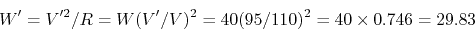
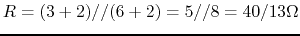
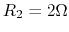
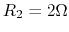
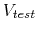
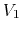
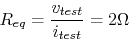
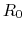
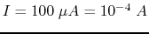

- (a) If two light bulbs both labeled as 110V and 40W in series are
connected to a socket outlet of 190V, what is the power consumption of
each of the bulbs?
Solution:

(b) Replace one of the two bulbs by another bulb labeled as 110V 15W, and
find the power consumption of each of the bulbs. What will happen to each
of the two bulbs? (Note that when the power consumption by a bulb is larger
than the specified wattage, it will be burned out!)
Solution:
- Measurement of a physical process by instruments may be tricky as
the instruments will inevitably affect the process being measured. The
figure below shows two possible configurations for the measurement of the
voltage across and the current through the load.

- What are required of the ammeter and the voltmeter to minimize their
influences on the measurements?
Solution:
The ammeter should have minimum (ideally 0) impedance while the voltmeter
should have maximum (ideally infinity) impedance.
- How would the ammeter and the voltmeter affect the measurement of the
current and the voltage in either of the configurations (a and b)?
Solution:
In (a) the voltmeter will by-pass some current so that the actual current
through the load is smaller than the reading of the ammeter.
In (b) the ammeter will cause some voltage drop and the actual voltage
across the load is lower than the reading of the voltmeter.
- Use Kirchhoff's voltage and current laws to find voltage and resistance
 in the circuit shown below:
in the circuit shown below:

(Note: The direction of a current and the polarity of a voltage source can
be assumed arbitrarily. To determined the actual direction and polarity, the
sign of the values also should be considered. For example, a current labeled
in left-to-right direction with a negative value is actually flowing
right-to-left.)
Solution:
- apply KCL to node B: ,
- apply KCL to node C: ,
- apply KCL to node D: ,
- apply KVL to loop ABCD:
,
- apply KVL to loop BDA:
,
, or
- apply KVL to loop BDC:
,
- Find the equivalent resistance between the two terminals before and
after the switch is closed. (Note, the two diagonal branches are NOT
connected to each other in the middle.)

Solution:
before S is closed,

after S is closed,
- Find the equivalent resistance
 between the two terminals
in the figure, where , , , ,
. What is if ?
between the two terminals
in the figure, where , , , ,
. What is if ?
(Hint: apply a test voltage  across the terminals and the
equivalent resistance can be found to be
.
The circuit can be solved by applying KCL to  and  .)
.)
Solution:
solving these we get
. Then apply KCL to the
positive terminal to get
solving to get

Note that in this case , independent of the value of .
Alternatively, based on delta-Y conversion (to be considered later), the
triangle (delta) formed by , , and can be coonverted to a Y
configuration with (top), (left), and . Then
we have and . Their parallel combination is
, in series with , i.e., the total resistance
is
 . However, this approach does not reveal the fact that
can take any value without changing .
. However, this approach does not reveal the fact that
can take any value without changing .
- Design a multimeter that can measure both DC and AC voltage, DC current,
and resistance with different scales. Specifically, you are given an analog
meter with a needle display, which reaches full scale when a DC current
of
 goes through it. The internal resistance of the
meter is 10 Ohms. In addition, you need some multi-position rotary switches
to select different scales for each of the three types of measurements, and
resistors with any values needed in your design.
- DC Voltage measurement: DC voltages in these ranges can be measured
0-2.5, 0-10, 0-50, and 0-250 (all in volts). Use a 4-position rotary switch
to select one of the four ranges as shown in the figure below. For example,
when the range of 0-10 is selected, the needle display will reach full scale
when the voltage being measured is 10 V. The circuit is shown below. Determine
all resistances labeled.
Solution:
,
,
and
.
- AC Voltage measurement: To measure an AC voltage (in terms of its
RMS value), it first needs to be converted into a DC voltage. This can
be achieved by a diode which only allows the current to pass in one
direction (along the arrow) but not the other. This process is called
rectification. The diode will also cause a voltage drop of 0.7 volt
along the direction. The actual reading of the meter reflects the
average value of the rectified current. Find the resistance
 so
that when the incoming AC voltage is
so
that when the incoming AC voltage is  volt (RMS), the meter shows
a full scale display.
volt (RMS), the meter shows
a full scale display.
Solution: The peak value of voltage is
,
which is reduced (due to voltage drop of the diode) to
.
The average value of the rectified voltage is
. For the
meter to have a full scale display, the current need to be
The internal resistance of can be neglected.
- DC current measurement: measure currents in these ranges (all in mA):
0-0.5, 0-2.5, 0-10, 0-50. Use a 4-position rotary switch to select one
of the four ranges as shown in the figure below. For example, when the
range of 0-10 is selected, the needle display will reach full scale when
a 10 mA current is measured. Determine all resistances labeled. Use
 .
.
Solution: Voltage across input is
.
Therefore
- Resistance measurement: The circuit for resistance measurement is
provided as shown below, where
 . Determine the values for the
resistors labeled as ,
. Determine the values for the
resistors labeled as ,  ,
,  , and
and so that the needle display of the meter is full scale
() when the resistor
, and
and so that the needle display of the meter is full scale
() when the resistor  being measured (between the
two leads labeled + and -) is zero, or half scale (
being measured (between the
two leads labeled + and -) is zero, or half scale ( ) when
the value of and the position of he two synchronized rotary switches
are given in each of the four case shown in the table:
) when
the value of and the position of he two synchronized rotary switches
are given in each of the four case shown in the table:
| positions |
|
 |
|
 |
| values |
20 |
200 |
2000 |
20 |

Solution:
- First determine : when , we get
.
- When , the current through meter should be:
Given , and , we can solve this
equation to get
- When , solving the above equation we get
.
- When , solving the above equation we get
.
- When , we need to determine and
so that
, and also when ,
. and can be found by solving
these equations:
Solving we get ,
, i.e.,
,